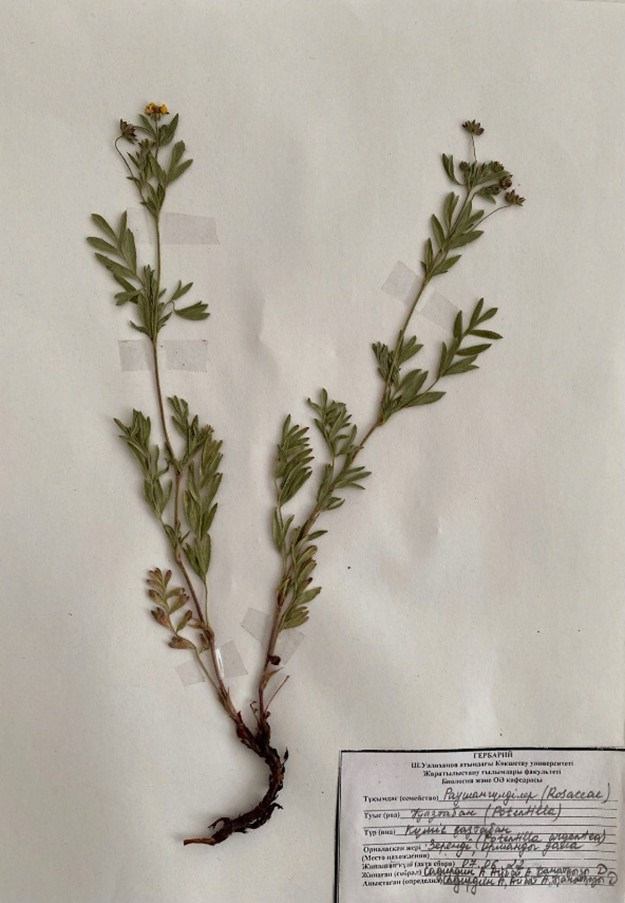

Күміс қазтабан - Potentilla argentea L - Лапчатка серебристая

Биологиялық сипаттамасы: Олардың биіктігі 3-70 см. Тамыры жуан, тамырсабағы түйнек тәрізді болады. Сабақтары тік, кейбір түрлерінде төселмелі келеді. Жапырақтары үшқұлақты, саусақ салалы, қауырсын тәрізді күрделі. Ақ, сары, қызыл гүлдері қалқанша - сыпыртқы гүлшоғырын құрайды, кей түрлерінде жеке орналасады. Гүліндегі тостағанша жапырақшалары 5 немесе 4-тен сыртқы және ішкі шеңбер құрып орналасады. Күлте жапырақшаларының саны 5, кейбір түрінде — 4. Аталық саны 10-нан 30-ға дейін, басым көпшілігінде 20. Аталық жіпшелері біз тәрізді жіңішке. Гул табаны дөңес, ойыс келеді. Көктемнен қоңыр күзге дейін гүлдейді. Жемісі - құрғақ келген, көп жаңғақша. Қның шөбінде, әсіресе түйнек тәрізді тамырсабағында илік заттар мол, балауыз, крахмал, қына қышқылы бар.
Таралу аймағы: Еуропа, Оңтүстік-Батыс Азияның кейбір аудандарында, Кавказда, батыста жиі кездестіруге болады және шығыс Сібір Орта Азияда. Қазақстанның барлық аумағында, биік таулы аймақтарында орман-тоғай шетінде, далалы жерлер мен шалғындықта, су жағасында (тек шөлді жерде өспейді) өседі.